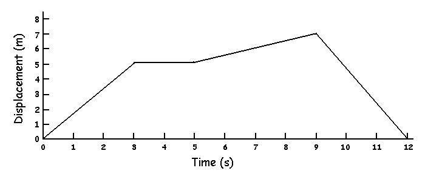

Linear Kinematics
Average Velocity:
Average velocity is the rate of change of displacement and can be calculated by dividing the change in displacement by the change in time. The units are meters per second (m/s).
Consider a person walking back and forth across a room. The person starts at one side of the room and walks 5 meters across the room in a time of 3 seconds. The person pauses at this spot for 2 seconds before travelling slowly 2 more meters forward in 4 seconds. At this point, the person suddenly changes direction and quickly returns to the starting position in three seconds. If we graph this displacement with respect to time, we get the following: 
Find the average velocity between t=0 and t=3.
Solution:
In that time period, the person changed from a displacement of 0 to a displacement of 5. We use the delta sign (Δ) to represent change which is equal to the final value minus the initial value.
Therefore Δdisplacement = 5 - 0 = 5 m and Δtime = 3 - 0 = 3 s
average velocity = Δd/Δt = 5 / 3 = 1.67 m/s
Average Acceleration:
Average acceleration is the rate of change of velocity and can be calculated by dividing the change in velocity by the change in time.
average acceleration = Δv / Δt
The units for acceleration are meters per second per second (m/s/s).